CLUBES URBA TOP 12 2024
 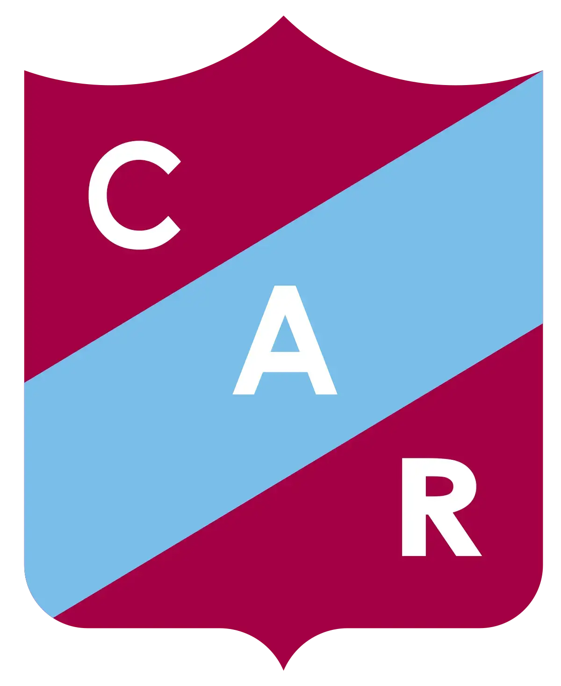
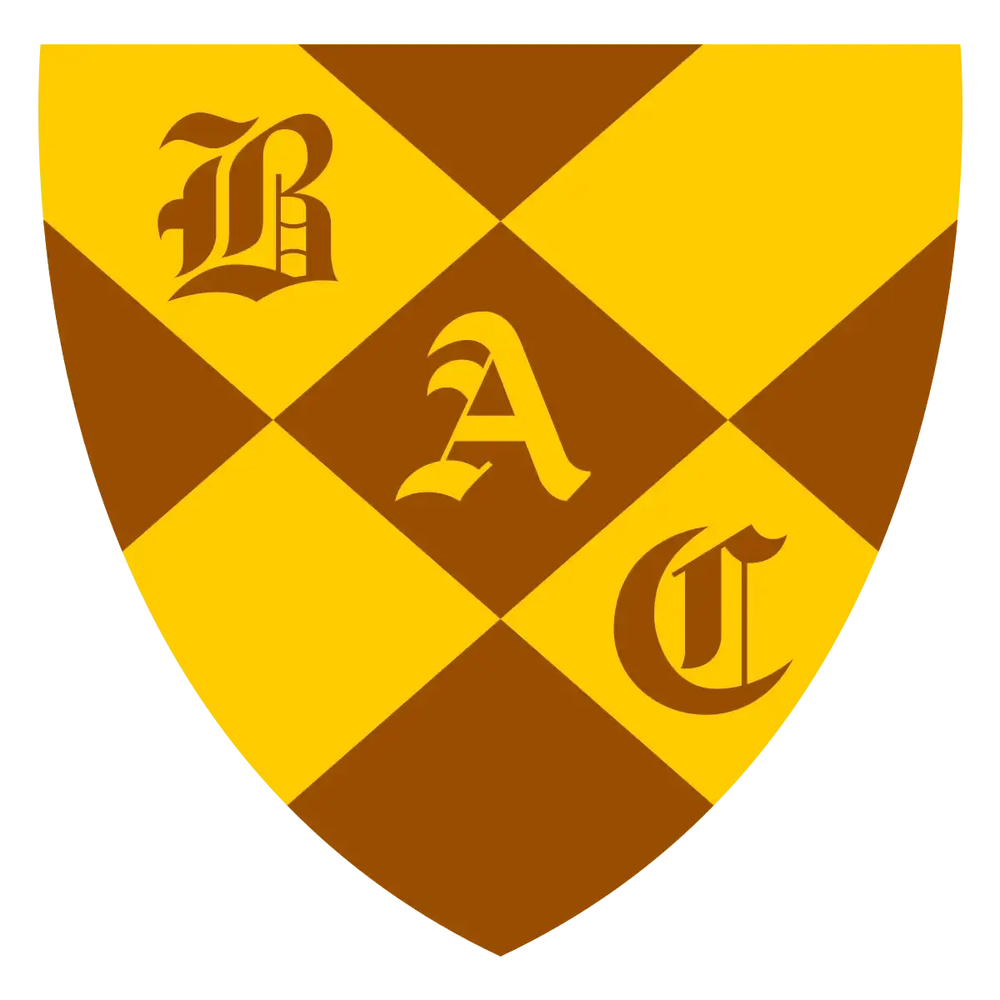
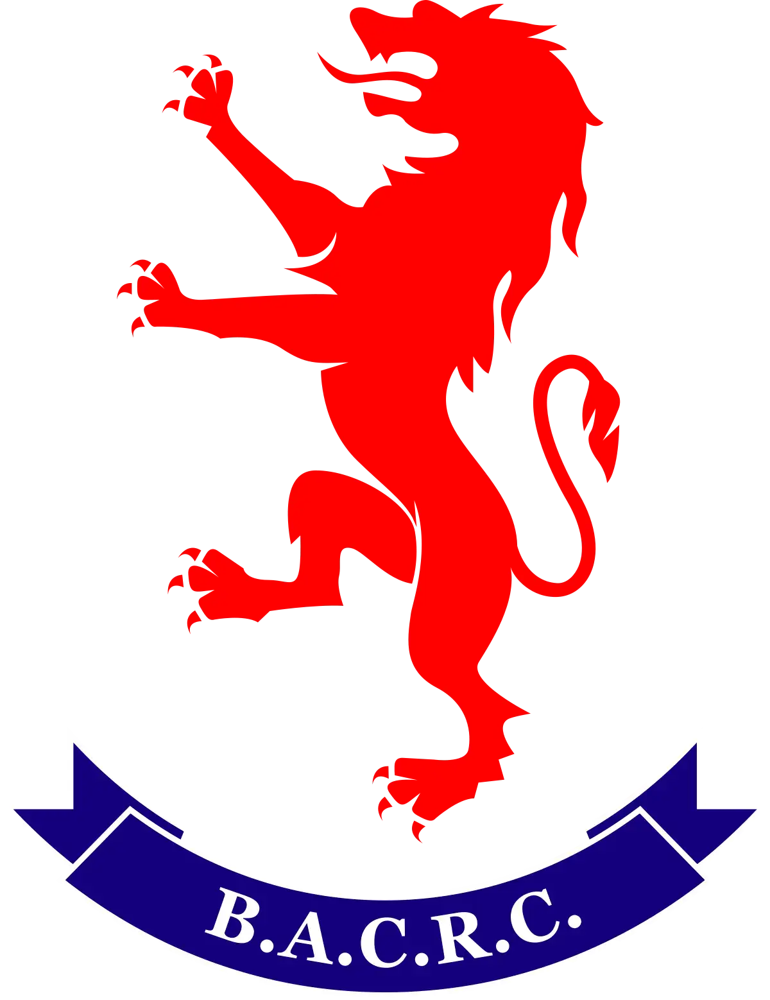
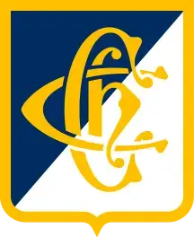
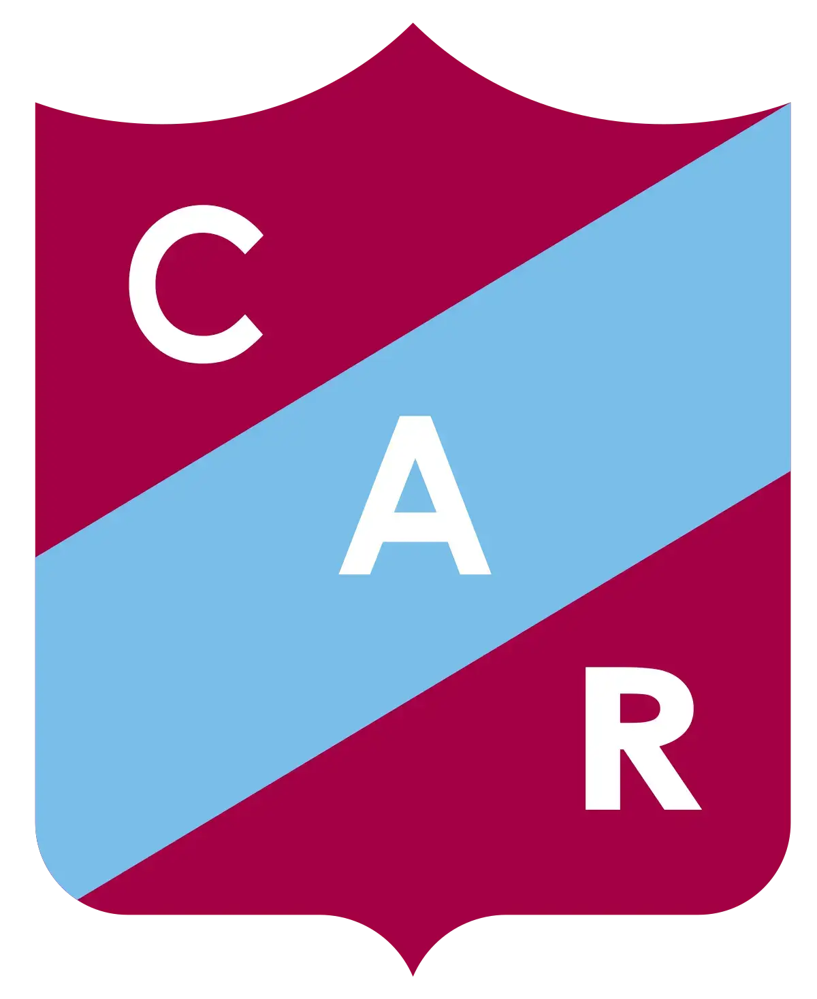
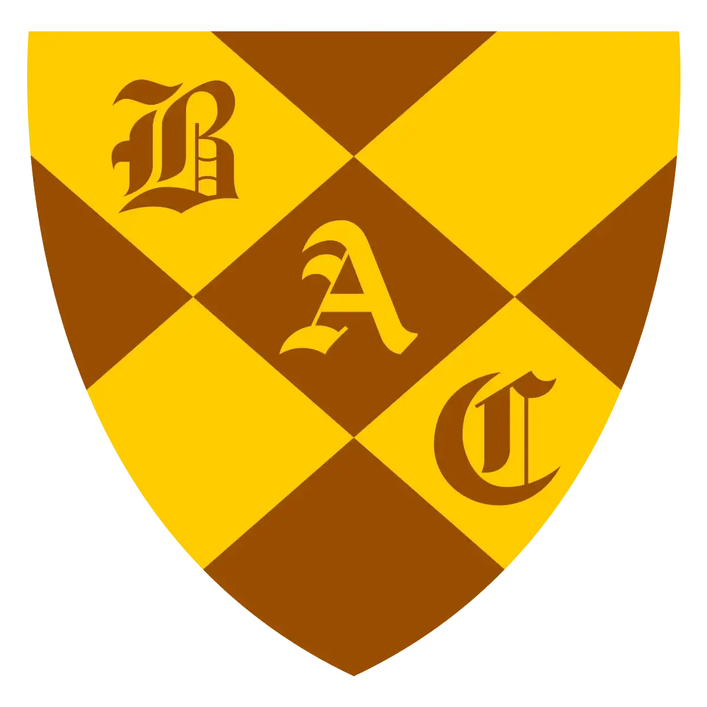
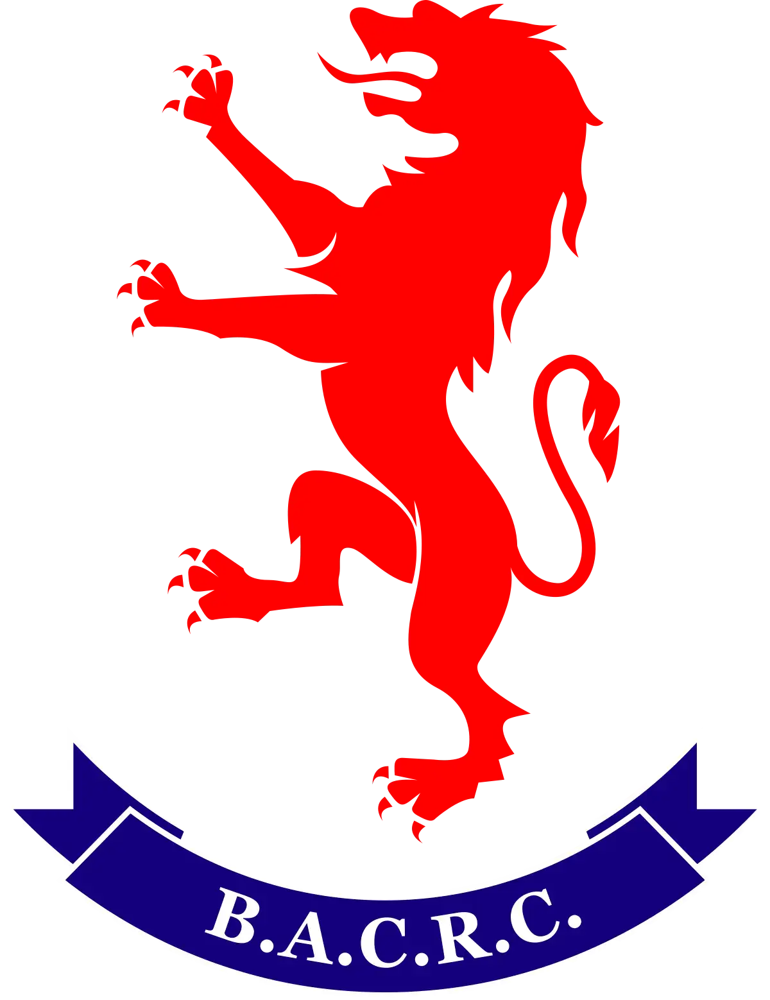
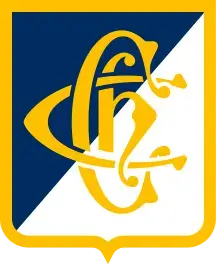


 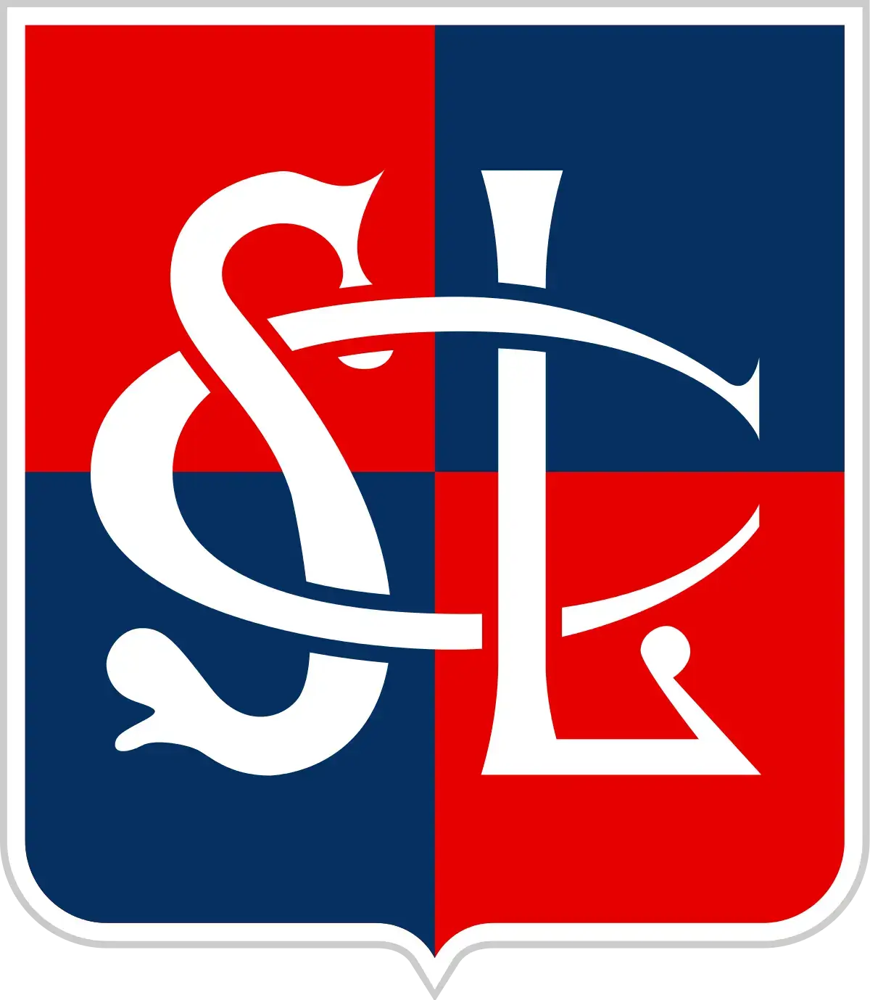
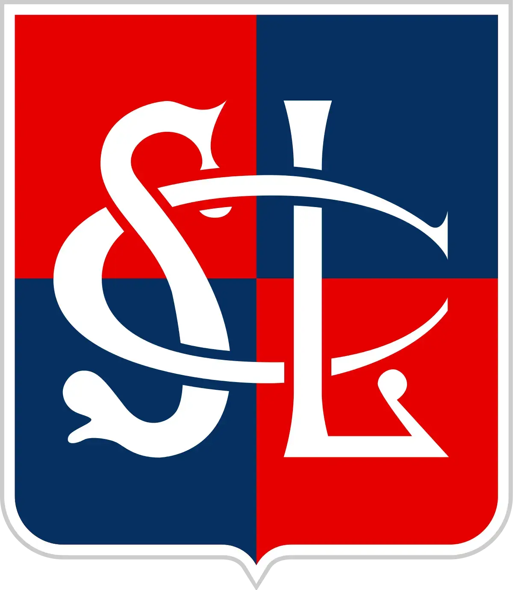
Alumni
Títulos: (7). 1989, 1990, 1991, 1992, 2001, 2018, 2024.
Participaciones en Top 12 / Top 14: (28). 1996, 1997, 1998, 1999, 2000, 2001, 2002, 2003, 2004, 2005, 2006, 2007, 2008, 2009, 2010, 2011, 2012, 2013, 2014, 2015, 2016, 2017, 2018, 2019, 2021, 2022, 2023, 2024.
Fecha de Fundación: 13 de diciembre de 1951.
Atlético del Rosario
Títulos: (5). 1905, 1906, 1935, 1996, 2000.
Participaciones en Top 12 / Top 14: (23). 1996, 1997, 1998, 1999, 2000, 2001, 2002, 2003, 2005, 2006, 2009, 2010, 2011, 2012, 2013, 2014, 2015, 2016, 2017, 2019, 2022, 2023, 2024.
Fecha de Fundación: 27 de Marzo de 1867.
Belgrano Athletic
Títulos: (11). 1907, 1910, 1914, 1921, 1936, 1940, 1963, 1966, 1967, 1968, 2016.
Participaciones en Top 12 / Top 14: (20). 1996, 1997, 2002, 2006, 2008, 2009, 2010, 2011, 2012, 2013, 2014, 2015, 2016, 2017, 2018, 2019, 2021, 2022, 2023, 2024.
Fecha de Fundación: 17 de agosto de 1896.
Buenos Aires
Títulos: (10). 1900, 1901, 1902, 1903, 1904, 1908, 1909, 1915, 1958, 1959.
Participaciones en Top 12 / Top 14: (12). 1997, 1998, 2000, 2001, 2002, 2003, 2004, 2008, 2009, 2010, 2011, 2024.
Fecha de Fundación: Con anterioridad al 8 de Diciembre de 1864.
Champagnat
Títulos: (0).
Participaciones en Top 12 / Top 14: (12). 1997, 1998, 2000, 2001, 2002, 2003, 2004, 2008, 2009, 2010, 2011, 2024.
Fecha de Fundación: 30 de noviembre de 1956.
CUBA
Títulos: (15). 1931, 1942, 1944, 1945, 1947, 1949, 1950, 1951, 1952, 1965, 1968, 1969, 1970, 2013, 2021.
Participaciones en Top 12 / Top 14: (22). 1997, 1998, 1999, 2000, 2003, 2004, 2006, 2007, 2008, 2009, 2012, 2013, 2014, 2015, 2016, 2017, 2018, 2019, 2021, 2022, 2023, 2024.
Fecha de Fundación: 11 de mayo de 1918.
CASI
Títulos: (33). 1917, 1918, 1920, 1921, 1922, 1923, 1924, 1925, 1926, 1927, 1928, 1929, 1930, 1933, 1934, 1943, 1949, 1954, 1955, 1956, 1957, 1960, 1961, 1962, 1964, 1967, 1974, 1975, 1976, 1981, 1982, 1985, 2005.
Participaciones en Top 12 / Top 14: (28). 1996, 1997, 1998, 1999, 2000, 2001, 2002, 2003, 2004, 2005, 2006, 2007, 2008, 2009, 2010, 2011, 2012, 2013, 2014, 2015, 2016, 2017, 2018, 2019, 2021, 2022, 2023, 2024.
Fecha de Fundación: 24 de octubre de 1902.
Hindú
Títulos: (11). 1996, 1998, 2006, 2007, 2008, 2009, 2012, 2014, 2015, 2017, 2022.
Participaciones en Top 12 / Top 14: (28). 1996, 1997, 1998, 1999, 2000, 2001, 2002, 2003, 2004, 2005, 2006, 2007, 2008, 2009, 2010, 2011, 2012, 2013, 2014, 2015, 2016, 2017, 2018, 2019, 2021, 2022, 2023, 2024.
Fecha de Fundación: 10 de septiembre de 1919.
Newman
Títulos: (0).
Participaciones en Top 12 / Top 14: (26). 1997, 1998, 1999, 2000, 2002, 2003, 2004, 2005, 2006, 2007, 2008, 2009, 2010, 2011, 2012, 2013, 2014, 2015, 2016, 2017, 2018, 2019, 2021, 2022, 2023, 2024.
Fecha de Fundación: 15 de diciembre de 1975.
Regatas
Títulos: (0).
Participaciones en Top 12 / Top 14: (21). 1996, 1997, 1998, 1999, 2000, 2001, 2002, 2003, 2004, 2007, 2008, 2013, 2014, 2015, 2016, 2017, 2018, 2019, 2021, 2022, 2024.
Fecha de Fundación: 14 de febrero de 1895.
SIC
Títulos: (27). 1939, 1941, 1948, 1970, 1971, 1972, 1973, 1977, 1978, 1979, 1980, 1983, 1984, 1986, 1987, 1988, 1993, 1994, 1997, 1999, 2002, 2003, 2004, 2010, 2011, 2019, 2023.
Participaciones en Top 12 / Top 14: (28). 1996, 1997, 1998, 1999, 2000, 2001, 2002, 2003, 2004, 2005, 2006, 2007, 2008, 2009, 2010, 2011, 2012, 2013, 2014, 2015, 2016, 2017, 2018, 2019, 2021, 2022, 2023, 2024.
Fecha de Fundación: 14 de diciembre de 1935.
San Luis
Títulos: (0).
Participaciones en Top 12 / Top 14: (24). 1997, 1998, 1999, 2000, 2001, 2002, 2004, 2005, 2006, 2008, 2010, 2011, 2012, 2013, 2014, 2015, 2016, 2017, 2018, 2019, 2021, 2022, 2023, 2024.
Fecha de Fundación: 15 de diciembre de 1961.
FINAL - 26 de Octubre 2024
| Belgrano Athletic | 17 - 20 | ALUMNI (CAMPEÓN) | |
Campeón del URBA Top 12 2024: ALUMNI (7° título URBA)
SEGUNDA SEMIFINAL - 20 de Octubre 2024
|
SIC | 21 - 30 | ALUMNI | |
PRIMERA SEMIFINAL - 19 de Octubre 2024
|
Newman | 27 - 28 | BELGRANO ATHLETIC |
TABLA DE POSICIONES - TABLA FINAL URBA TOP 12 2024
| POS | CLUB | PJ | G | E | P | PF | PC | DP | BO | BD | PTS | |
|---|---|---|---|---|---|---|---|---|---|---|---|---|
| 1* | |
Newman | 22 | 17 | 0 | 5 | 749 | 501 | 248 | 7 | 2 | |77 |
| 2* | |
SIC | 22 | 17 | 1 | 4 | 661 | 459 | 202 | 4 | 1 | 75 |
| 3* | |
Alumni | 22 | 16 | 0 | 6 | 627 | 502 | 125 | 7 | 2 | 73 |
| 4* | Belgrano | 22 | 15 | 0 | 7 | 720 | 539 | 181 | 6 | 5 | 71 | |
| 5 | |
CASI | 22 | 13 | 1 | 8 | 740 | 521 | 219 | 9 | 5 | 68 |
| 6 | |
Hindú | 22 | 10 | 1 | 11 | 493 | 604 | -111 | 1 | 4 | 47 |
| 7 | San Luis | 22 | 10 | 0 | 12 | 487 | 572 | -85 | 1 | 6 | 47 | |
| 8 | |
CUBA | 22 | 8 | 1 | 13 | 602 | 572 | 30 | 5 | 7 | 46 |
| 9 | Buenos Aires | 22 | 8 | 1 | 13 | 496 | 615 | -119 | 2 | 5 | 41 | |
| 10 | |
Regatas Bella Vista | 22 | 8 | 1 | 13 | 457 | 519 | -62 | 1 | 6 | 41 |
| 11** | Champagnat | 22 | 2 | 2 | 18 | 466 | 748 | -282 | 1 | 8 | 21 | |
| 12** | Atlético del Rosario | 22 | 3 | 2 | 17 | 498 | 844 | -346 | 1 | 2 | 19 |
*puestos de semifinales (1° vs. 4°; 2° vs. 3°).
**puestos de descenso.
- Descendieron a la Primera "A" 2025: Champagnat y Atlético del Rosario
- Ascendieron desde la Primera "A" para disputar el Top 12 2025: La Plata y Los Tilos
TOP 12 URBA - FECHA 22 / SÁBADO 5 DE OCTUBRE DEL 2024
|
Hindú | 19 - 43 (B) | ALUMNI | |
| SAN LUIS | 29 - 27 | Belgrano Athletic | ||
|
REGATAS BELLA VISTA | 26 - 17 | Buenos Aires C&RC | |
 |
CASI | 21 - 24 | Newman | |
|
CUBA | 50 (B) - 29 | Atlético del Rosario | |
|
SIC | 55 (B) - 12 | Champagnat |
ACTUALIDAD URBA
La Unión de Rugby de Buenos Aires está integrada por 91 clubes que participan en los torneos de sus seis diferentes categorías (Top 12, Primera A, B y C, Segunda, Tercera y Desarrollo). A nivel de clubes, los equipos de Buenos Aires participan del Torneo Nacional de Clubes en el que, desde la temporada 1993, los conjuntos URBA obtuvieron 22 de las 27 ediciones disputadas (la última por el SIC este 2023), siendo Hindú Club el máximo ganador de la historia con 11 títulos.
HISTORIA
ÚLTIMOS CAMPEONES DE LA URBA
 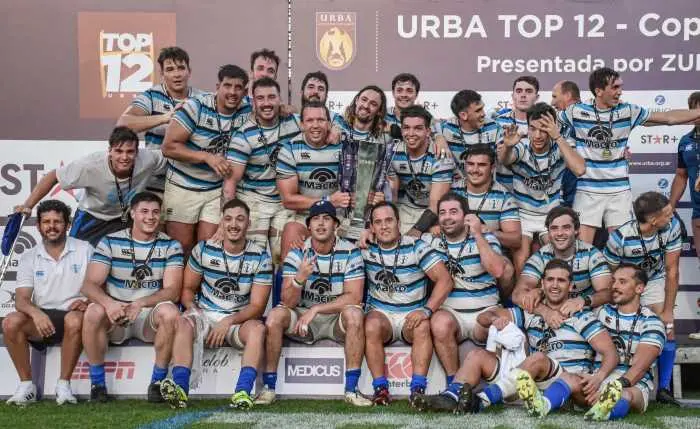
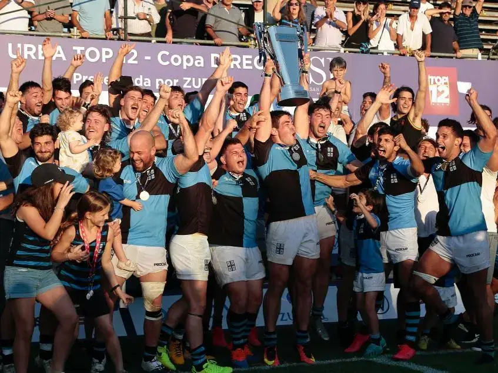
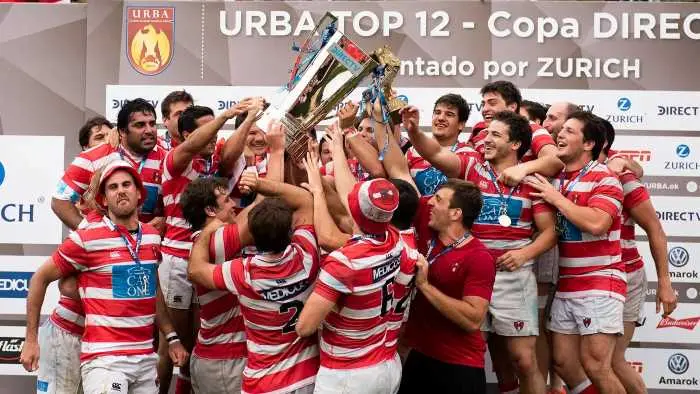
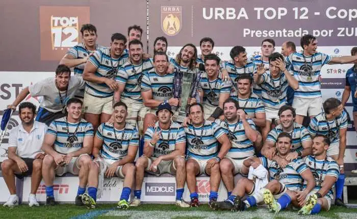
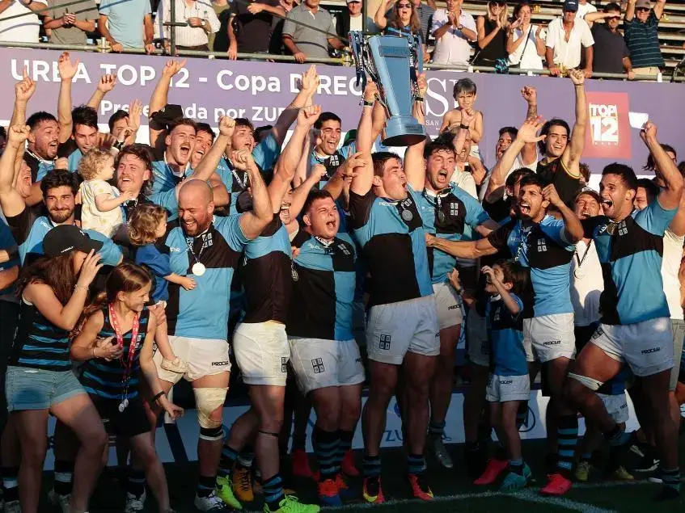
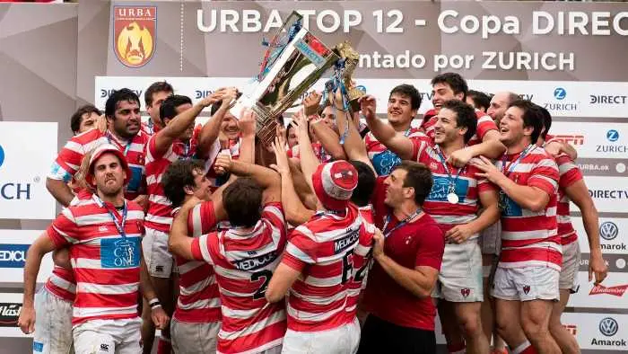